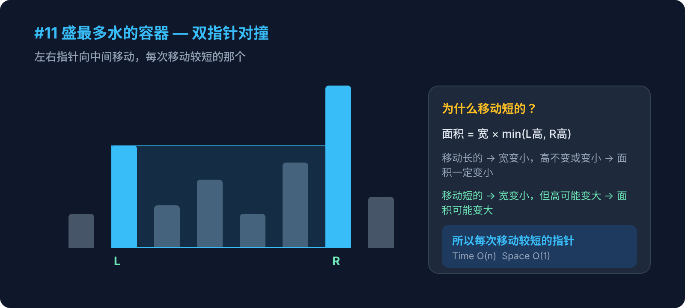

Hot 100 · 双指针 · 第1周

给定 n 个非负整数 a1, a2, ..., an，每个数代表坐标中的一个点 (i, ai)。画 n 条垂直线，找出其中两条线，使得它们与 x 轴共同构成的容器可以盛最多的水。
输入：height = [1, 8, 6, 2, 5, 4, 8, 3, 7]
输出：49
解释：选择下标 1 和 8 的两条线（高度 8 和 7），宽度 = 7
面积 = min(8, 7) × 7 = 49暴力法是 O(n²)，如何优化到 O(n)？
为什么要移动较短的指针？
点击每一步展开详细说明
left = 0（最左端），right = height.length - 1（最右端）。
初始宽度最大，之后每移动一步宽度减 1。
面积 = 宽 × 高 = (right - left) × Math.min(height[left], height[right])
每次都和 maxWater 取较大值。
如果 height[left] < height[right]，移动 left++；否则 right--。
height = [1, 8, 6, 2, 5, 4, 8, 3, 7]
function maxArea(height) {
let left = 0, right = height.length - 1
let maxWater = 0
while (left < right) {
const w = right - left
const h = Math.min(height[left], height[right])
maxWater = Math.max(maxWater, w * h)
if (height[left] < height[right]) {
left++
} else {
right--
}
}
return maxWater
}| 维度 | 复杂度 | 说明 |
|---|---|---|
| 时间 | O(n) | 左右指针各走一遍，总共 n 步 |
| 空间 | O(1) | 只用了几个变量 |
快慢指针（同向）
两个指针从同一端出发
slow 记录位置，fast 扫描
对撞指针（相向）
两个指针从两端出发
向中间收缩